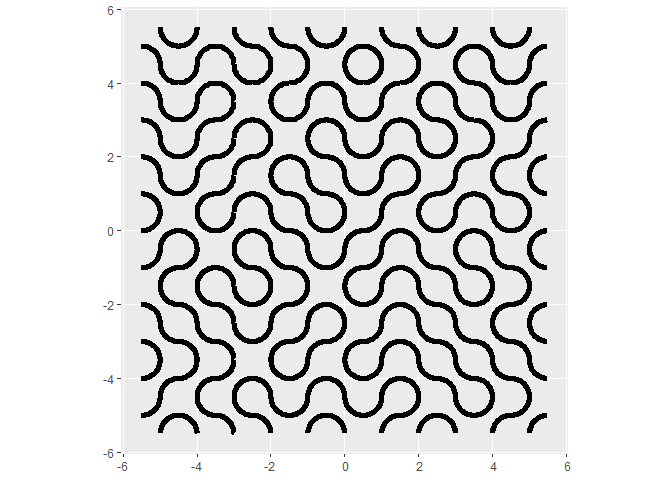
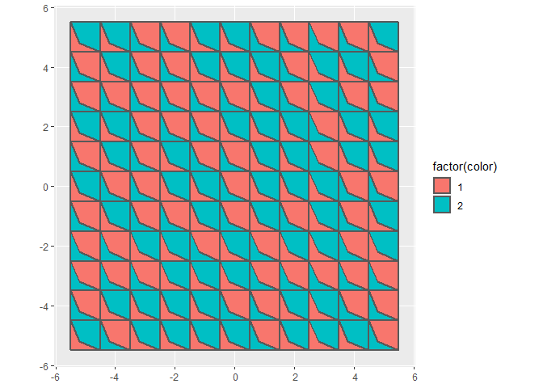
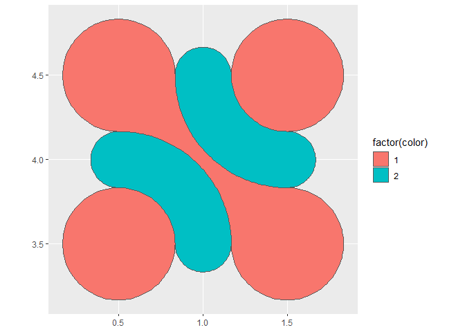
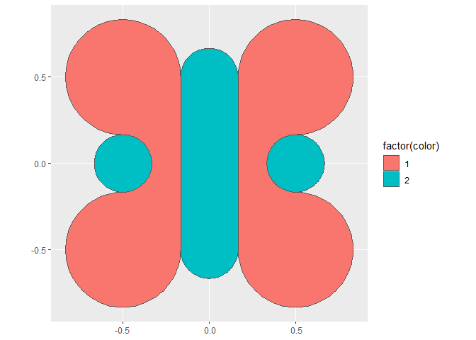
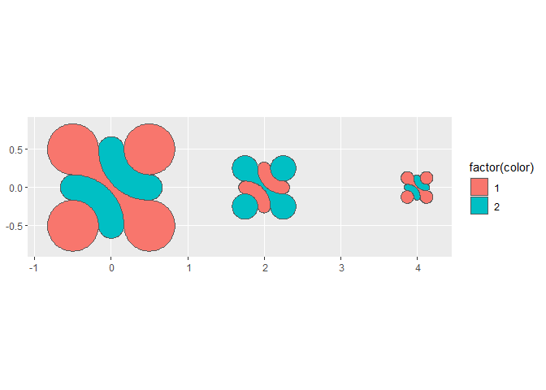
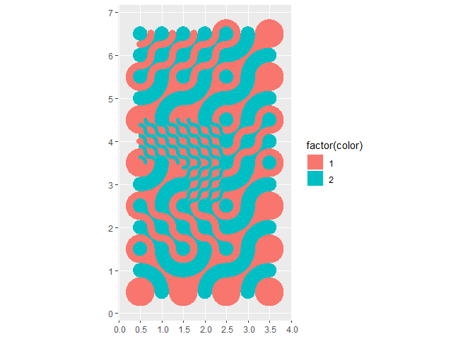

This package offers various functions to create Truchet tiles and to arrange them in mosaics either using random parameters or by design. The package implements:
The single scale Truchet tiles discussed by Smith and Boucher in their 1987 article in Leonardo.
Flexible Truchet tiles as discussed in the 2013 paper of Bosch and Colley in Journal of Mathematics and Art.
The multi-scale Truchet tiles of Christopher Carlson as explained in this blog post.
Under the hood, the functions use the package {sf} to create and manipulate spatial objects. There are functions to create tiles and and functions to arrange the tiles in mosaic. Since the tiles and mosaics are simple features, they can be plotted using {ggplot2} and geom_sf(). In addition, further manipulations of the tiles (such as buffering) can be done using the functionality of {sf}.
Installation
You can install the development version of truchet from GitHub with:
# install.packages("devtools")
devtools::install_github("paezha/truchet")Single scale tiles
Tiles implemented
Function st_truchet_l() is used to generate single scale, line-based tiles. Currently the following tiles are implemented:
# Tiles types
tile_types <- data.frame(type = c("dl", "dr")) %>%
mutate(tile = 1:n(),
x = 2 * tile %% 2,
y = 2 * tile %/% 2)
# Elements for assembling the mosaic
x_c <- tile_types$x
y_c <- tile_types$y
type <- as.character(tile_types$type)
pmap_dfr(list(x_c, y_c, type), st_truchet_l) %>%
ggplot() +
geom_sf(size = 2) +
geom_text(data = tile_types,
aes(x = x,
y = y,
label = type),
nudge_y = 1)
Assembling a mosaic
Function st_truchet_ss() is used to assemble a mosaic. It works with pre-set parameters that randomize the choice of tile and placement, but also accepts a data frame with inputs for greater control of the mosaic. This is a fully random mosaic:
mosaic <- st_truchet_ss(xlim = c(-5, 5),
ylim = c(-5, 5))
ggplot() +
geom_sf(data = mosaic,
size = 2)
These tiles are composed of simple feature objects of type “LINESTRING”.
Flexible Truchet tiles
Tiles implemented
Function st_truchet_flex() is used to generate single scale, flexible tiles. Currently the following tiles are implemented:
# Tiles types
tile_types <- data.frame(type = c("Al", "Bl", "Cl", "Dl","Ac", "Bc", "Cc", "Dc")) %>%
mutate(tile = 1:n(),
x = 2 * tile %% 5,
y = 2 * tile %/% 5,
b = 1/3)
# Elements for assembling the mosaic
x_c <- tile_types$x
y_c <- tile_types$y
type <- as.character(tile_types$type)
b <- tile_types$b
pmap_dfr(list(x_c, y_c, type, b), st_truchet_flex) %>%
ggplot() +
geom_sf(aes(fill = factor(color)),
size = 2) +
geom_text(data = tile_types,
aes(x = x,
y = y,
label = type),
nudge_y = 1)
#> Linking to GEOS 3.9.1, GDAL 3.2.1, PROJ 7.2.1; sf_use_s2() is TRUE
The function for creating the tiles takes the x and y coordinates for placing the tile, the type of tile, and also a parameter b (0 > b > 1) that controls the shape of the diagonal line. In the case of tiles “Al” through “Dl” the boundary is made of straight lines. In the case of tiles “Ac” through “Dc”, the boundary is a curve created using the function bezier() from the {bezier} package. The following figure illustrate the effect of changing b:
# Tiles types
tile_types <- data.frame(b = seq(1/10, 9/10, length.out = 10)) %>%
mutate(tile = 1:n(),
type = "Al",
x = 2 * tile %% 5,
y = 2 * tile %/% 5)
# Elements for assembling the mosaic
x_c <- tile_types$x
y_c <- tile_types$y
type <- as.character(tile_types$type)
b <- tile_types$b
pmap_dfr(list(x_c, y_c, type, b), st_truchet_flex) %>%
ggplot() +
geom_sf(aes(fill = factor(color)),
size = 1) +
geom_text(data = tile_types,
aes(x = x,
y = y,
label = as.character(round(b, 2))),
nudge_y = 1)
Assembling a mosaic
Function st_truchet_fm() is used to assemble a mosaic with flexible tiles. It works with pre-set parameters that randomize the choice of tile and placement, but also accepts a data frame with inputs for greater control of the mosaic. This is a fully random mosaic:
st_truchet_fm(xlim = c(-5, 5), ylim = c(-5, 5), b = 0.3) %>%
ggplot() +
geom_sf(aes(fill = factor(color)),
size = 1)
The tiles are simple feature objects of type “POLYGON”.
Multi-scale tiles
These are examples of multi-scale tiles. The complete list of multi-scale tiles implemented in the package appears at the bottom.
Tile of type “d” or “\” and “/” in Carlson’s notation.
Using function st_truchet_p() with type “dl” or “dr” produces a simple features data frame with the elements of a single tile, diagonal left (“\”) or diagonal right (“/”). In addition to the geometry of the spatial elements of the tiles, the data frame includes identifiers for tiles (i.e., tile 1 is “\” and tile 2 is “/”) as well as colors. The function accepts the coordinates of the tile.

Tile of type “-” or “-” and “|” in Carlson’s notation.
Using function st_truchet_p() with type “-” or “|” produces a simple features data frame with the elements of a single tile, horizontal (“-”) or vertical (“|”). In addition to the geometry of the spatial elements of the tiles, the data frame includes identifiers for tiles (i.e., tile 1 is “|” and tile 2 is “-”) as well as colors.

Tile of type “f” in Carlson’s notation.
Using function st_truchet_p() with type “fnw”, “fne”, “fse”, or “fsw” produces a data frame with the elements of a single tile. In addition to the geometry of the spatial elements of the tiles, the data frame includes identifiers for tiles and colors.
ggplot() +
geom_sf(data = st_truchet_p(x = 0, y = 2, type = "fnw"),
aes(fill = factor(color))) +
geom_sf(data = st_truchet_p(x = 2, y = 2, type = "fne"),
aes(fill = factor(color))) +
geom_sf(data = st_truchet_p(x = 2, y = 0, type = "fse"),
aes(fill = factor(color))) +
geom_sf(data = st_truchet_p(x = 0, y = 0, type = "fsw"),
aes(fill = factor(color)))
Tile scales
Carlson’s tiles are designed to work at multiple scales. At the moment, the function to create tiles supports scale 1 (the tiles are squares with sides of length 1), scale 1/2 (sides of tile are of length 1/2), and scales 1/4 (sides of tile are of length 1/4). I don’t see much point doing tiles smaller than this, as their effect can be replicated with bigger tiles in bigger mosaics, and when used in multi-scale mosaics, the detail is lost at smaller scales. Argument scale_p is used to select the scale of the output tile (the default is 1). Notice that the colors alternate at each scale.
ggplot() +
geom_sf(data = st_truchet_p(x = 0, y = 0, type = "dl", scale_p = 1),
aes(fill = factor(color))) +
geom_sf(data = st_truchet_p(x = 2, y = 0, type = "dl", scale_p = 1/2),
aes(fill = factor(color))) +
geom_sf(data = st_truchet_p(x = 4, y = 0, type = "dl", scale_p = 1/4),
aes(fill = factor(color)))
Assembling a mosaic with multi-scale tiles
It is possible to assemble the tiles into a mosaic manually, but an additional function offers some functionality to do this task.
Function st_truchet_ms() can be used with all default parameters. The default uses tiles of type dl and dr, which are positioned at random (with equal probability) on the mosaic:
It is possible to create mosaics with tiles of different sizes; the parameters p1, p2, and p3 control the proportion of tiles at each scale:
st_truchet_ms(p1 = 0.6, p2 = 0.3, p3 = 0.1) %>%
ggplot() +
geom_sf(aes(fill = factor(color)),
color = NA)
Mosaics can use different types of tiles:
Multi-scale tile collection
These are all the tiles currently implemented:
# Tiles types
tile_types <- data.frame(type = c("dl", "dr", "-", "|", "fnw", "fne", "fsw", "fse", "+", "+.", "x.", "tn", "ane", "asw")) %>%
mutate(tile = 1:n(),
x = 2 * tile %% 5,
y = 2 * tile %/% 5)
# Elements for assemblig the mosaic
x_c <- tile_types$x
y_c <- tile_types$y
type <- as.character(tile_types$type)
scale_p <- rep(1, nrow(tile_types))
pmap_dfr(list(x_c, y_c, type, scale_p), st_truchet_p) %>%
ggplot() +
geom_sf(aes(fill = factor(color))) +
geom_text(data = tile_types,
aes(x = x,
y = y,
label = type),
nudge_y = 1)